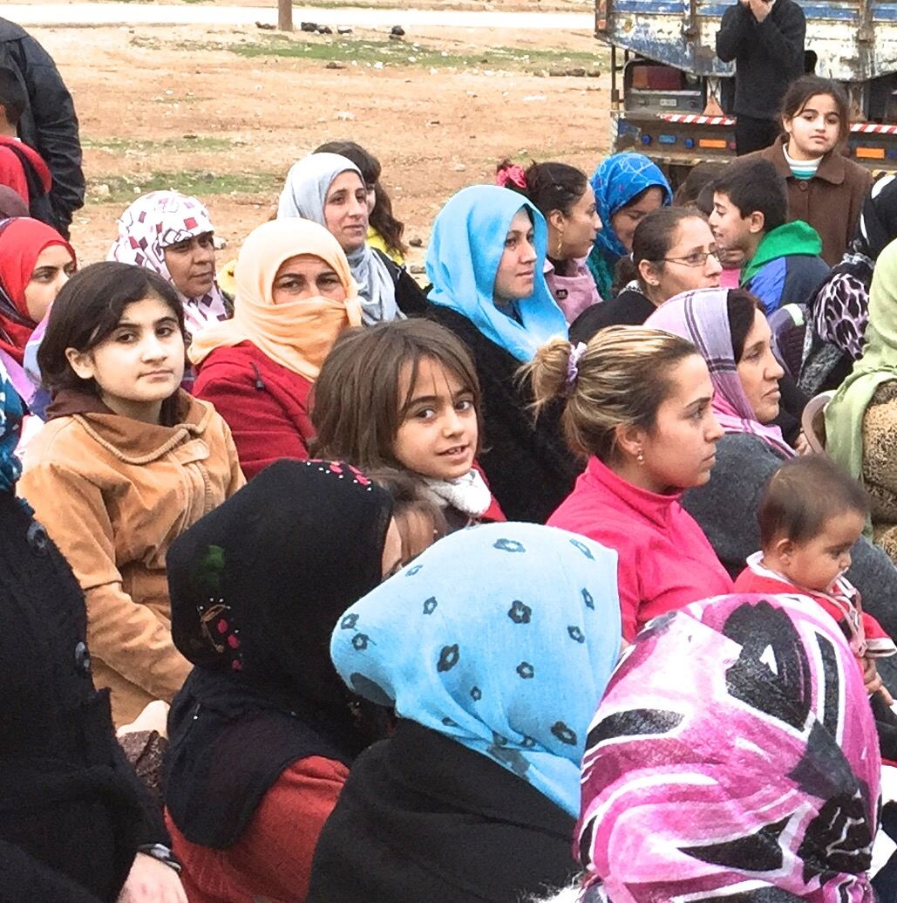

Les principes
- Démocratie sans État : le pouvoir part des communes, la coordination se fait par des conseils fédérés.
- Libération des femmes : co-présidence femme-homme à tous les niveaux, au moins 40 % de femmes partout, et des structures de femmes autonomes.
- Pluralité : Kurdes, Arabes, Syriaques, Assyriens, Arméniens, Turkmènes, Yézidis ; plusieurs langues officielles.
- Écologie sociale et économie coopérative.
- Autodéfense plutôt qu'armée d'État.
De la commune à la région
La commune regroupe les foyers d'une rue, d'un quartier ou d'un village. Son assemblée élit une co-présidence et des commissions. Les communes envoient une délégation au conseil de quartier ou de village, qui envoie à son tour au conseil de district, puis au conseil du peuple de la région. En parallèle, les femmes s'organisent de façon autonome à chaque niveau.
Ce que fait une commune

La commune n'est pas une simple réunion de voisins : elle prend en charge la vie quotidienne à travers des commissions.
| Commission | Rôle |
|---|---|
| Femmes | Lien avec les maisons des femmes, suivi des violences, formation. |
| Autodéfense | Garde du quartier, en lien avec les forces de sécurité locales. |
| Économie | Coopératives (boulangeries, ateliers, terres), distribution du pain et du fioul. |
| Santé, éducation | Soins de base, écoles en langue maternelle, cours pour adultes. |
| Justice & paix | Comités de conciliation qui cherchent le consensus avant tout tribunal. |
| Jeunesse, services | Activités pour les jeunes, eau, électricité, déchets. |
Le Contrat social
Adopté en 2014, puis réécrit en 2023, il tient lieu de constitution. Il garantit l'égalité femmes-hommes, la liberté de religion, l'usage des différentes langues, l'abolition de la peine de mort, et affirme le principe de l'autonomie démocratique plutôt que d'un État-nation.
À retenir
- La commune comme base, les conseils pour coordonner.
- Une organisation des femmes autonome à chaque niveau.
- Suite : révolution des femmes, écologie et critiques.
Sources et pour aller plus loin
Lire
- Un autre futur pour le Kurdistan ?, Pierre Bance, Noir et Rouge, 2017.Communes, conseils et Contrat social examinés en détail.
- Pour un municipalisme libertaire, Murray Bookchin, Atelier de création libertaire.Le penseur américain qui a inspiré Öcalan.
Sur le web
- Le confédéralisme démocratiqueL'idée et ses sources.
- Murray BookchinL'écologie sociale et le municipalisme libertaire.
- Abdullah ÖcalanLe fondateur du PKK, emprisonné depuis 1999, et son évolution.
Dossier rédigé par la bande à Mamie à partir de travaux d'historiennes et d'historiens et de textes des mouvements concernés. Libre de reproduction.